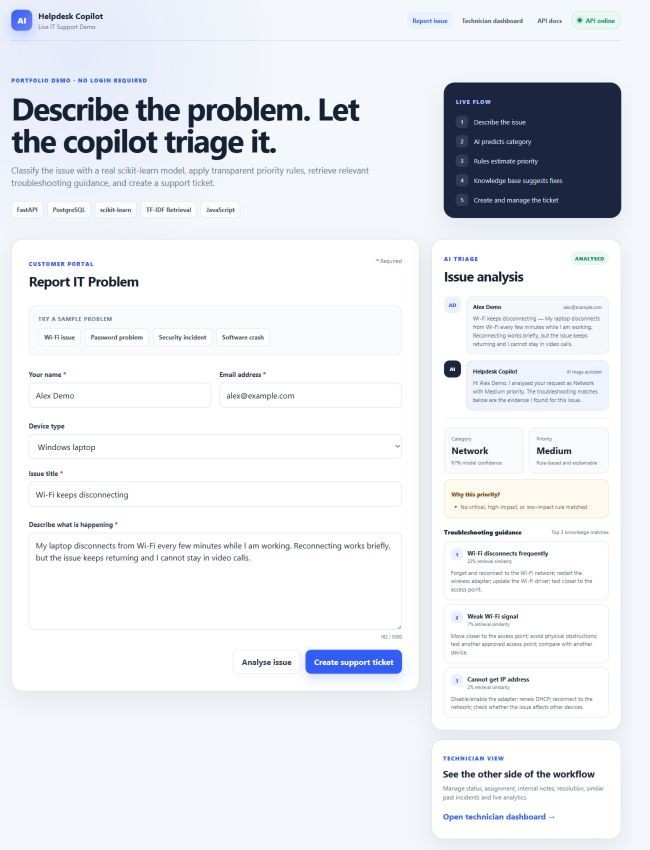
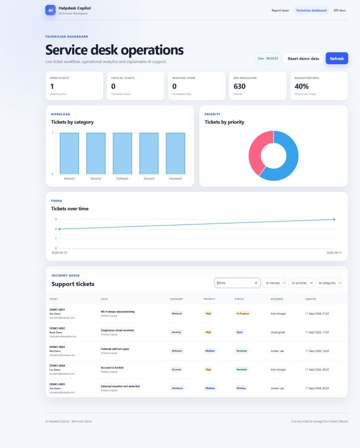

AI Helpdesk Copilot — building an explainable AI-assisted service desk
IT service desks receive large numbers of unstructured support requests. Before a technician can solve an issue, they often need to determine what kind of problem it is, how urgent it may be, what troubleshooting information is relevant, and whether similar incidents have already been resolved. I built AI Helpdesk Copilot as a portfolio project to explore how machine learning, transparent business rules, information retrieval and a practical ticketing workflow can work together in one system.
- Automated tests
- 25
- Synthetic training examples
- 490
- Troubleshooting articles
- 70
- Support categories
- 7
The problem
A support request often starts as a short piece of free-form text such as “My laptop keeps disconnecting from Wi-Fi” or “I clicked a suspicious link and entered my password.” The system needs to turn that description into useful operational information without hiding important decisions behind a black box.
The solution
AI Helpdesk Copilot provides an end-to-end support workflow. A customer enters their name, email, device information, issue title and description. The application analyses the request, predicts an IT support category, determines a priority using explainable rules, retrieves relevant troubleshooting articles and allows the customer to create a support ticket. The technician dashboard then provides ticket management, assignment, notes, resolution tracking, similar-incident search and operational analytics.
The end-to-end workflow
- Customer reports an issue
- Machine-learning category prediction
- Explainable priority detection
- Knowledge-base retrieval
- Troubleshooting suggestions
- Support ticket creation
- Technician dashboard
- Assignment and internal notes
- Similar resolved incident search
- Resolution
- Analytics update

How the AI works
The project deliberately combines machine learning with deterministic rules. Ticket category prediction uses TF-IDF text features with Logistic Regression to predict one of seven support categories.
Training data
The repository contains 490 synthetic, portfolio-safe IT support examples. The dataset demonstrates the complete model-training and serving workflow without exposing real customer support data.
Explainable priority rules
Priority is deliberately rule-based. Support urgency depends on operational impact, so the system keeps this decision transparent and controllable. It considers security incidents, account compromise, major outages, business-impacting connectivity problems and less urgent routine requests.
This separation allows machine learning to handle text categorisation while operational priority remains explainable and auditable.
Troubleshooting retrieval
After analysing an issue, the application searches 70 troubleshooting knowledge articles and returns the three most relevant matches. Retrieval uses TF-IDF cosine similarity so the relationship between the reported issue and the suggested guidance remains understandable. The interface exposes retrieval similarity and identifiable source articles.
Technician workflow
The technician dashboard turns AI analysis into a usable service-management workflow. Technicians can search and filter tickets, assign incidents, change status, add internal notes, inspect requester information, find similar resolved incidents and record final resolutions. Newly submitted customer tickets appear automatically without requiring a manual page refresh.
Operational analytics
- Open and critical ticket counts
- Resolved today, average resolution time and resolution rate
- Category and priority distribution
- Daily ticket volume
Incident management
- Status, priority and category filters
- Requester search and ticket assignment
- Technician notes and resolution workflow
- Similar resolved incident matching

Learning from resolved incidents
For active tickets, the system compares the issue with previously resolved incidents using TF-IDF similarity. This gives technicians another source of evidence by showing how related problems were handled previously. These matches are retrieved from operational ticket history, not generated by an LLM.
Data model
The full backend implementation uses SQLAlchemy with PostgreSQL support and a SQLite fallback for lightweight local development. The public GitHub Pages demo runs entirely in the browser and uses localStorage for demonstration data rather than a hosted database.
| Table | Responsibility |
|---|---|
tickets | Ticket number, requester name and email, title, description, device type, category, priority, status, assigned technician, creation and resolution times, and final resolution. |
ticket_notes | Notes linked to tickets, with author, note text and creation time. |
knowledge_base | Article title, category, problem, solution and retrieval keywords. |
Ticket statuses: Open · In Progress · Waiting · Resolved · Closed.
Backend and API design
The full engineering implementation is built around a FastAPI backend with validated API endpoints for AI analysis, ticket management, technician notes, similar-incident retrieval, resolution and analytics.
Explore the API endpoints
| Method | Endpoint | Purpose |
|---|---|---|
| POST | /analyse-issue | Analyse the complete support request |
| POST | /predict-category | Predict an IT support category |
| POST | /predict-priority | Apply explainable priority rules |
| POST | /suggest-solution | Retrieve troubleshooting articles |
| POST | /tickets | Create a support ticket |
| GET | /tickets | Search and filter tickets |
| GET | /tickets/{id} | Inspect a ticket |
| PATCH | /tickets/{id} | Update status and assignment |
| POST | /tickets/{id}/notes | Add a technician note |
| GET | /tickets/{id}/similar | Find similar resolved incidents |
| POST | /tickets/{id}/resolve | Record a resolution |
| GET | /analytics | Read operational metrics |
| GET | /health | Check service health |
Explore the implementation and documentation ↗
Testing and reliability
The project includes 25 automated tests using pytest and FastAPI TestClient. Tests cover ticket CRUD operations, automatic triage, classifier output, priority rules, knowledge retrieval, technician notes, similar-incident search, analytics and frontend routes. GitHub Actions runs the automated test suite when changes are pushed to the repository.
Portfolio deployment strategy
The recruiter-facing demo is hosted on GitHub Pages and runs client-side so it opens instantly without credentials, container startup or backend wake-up time. The repository contains the complete FastAPI application, SQLAlchemy models, PostgreSQL configuration, trained scikit-learn classifier, retrieval logic, tests and Docker Compose setup. That full implementation can be run locally or with Docker; the public GitHub Pages demo does not claim to be a hosted FastAPI/PostgreSQL deployment.
Key design decisions
- CRUD before AI
- The basic ticket-management workflow remains useful independently of the machine-learning component.
- Classical ML baseline
- TF-IDF and Logistic Regression provide a reproducible, explainable baseline for ticket classification.
- Transparent priority rules
- Urgency is treated as an operational business decision rather than an opaque prediction.
- Visible retrieval evidence
- Troubleshooting recommendations are connected to identifiable knowledge-base matches.
- Synthetic demo data
- Training examples, knowledge articles and seeded support tickets are portfolio-safe.
- No recruiter login
- The public demo allows a reviewer to understand and test the main workflow quickly.
What I learned
This project taught me how different parts of a practical software system fit together. Building the classifier was only one part of the work. I also had to think about API contracts, persistence, user workflows, explainable decisions, retrieval, testing, dashboard reliability and deployment. One of the most useful lessons was that AI features are more valuable when they support a clear operational workflow rather than existing as isolated model predictions.
Try the live system
The public demo requires no login and uses a browser-safe demonstration dataset.
- Open the customer portal.
- Describe an IT problem or select a sample issue.
- Analyse the issue.
- Review the predicted category, priority and troubleshooting suggestions.
- Create the support ticket.
- Open the technician dashboard.
- Find the new ticket.
- Assign it, add a note and change its status.
- Resolve the incident and observe the analytics update.